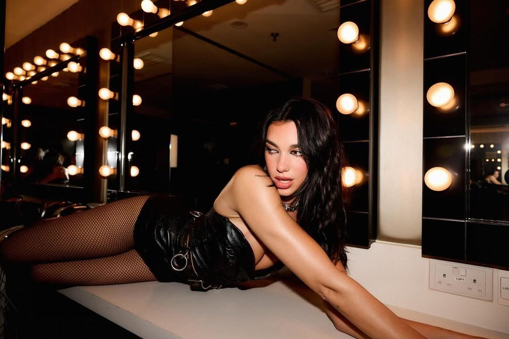

Dua Lipa is a British singer, songwriter, and model. She was born on August 22, 1995, in London, England. She began her music career in 2015 with the release of her debut single "New Love" and gained recognition with her self-titled debut album in 2017. Dua Lipa has won numerous awards, including two Grammy Awards, and is known for hits like "New Rules," "IDGAF," and "Don't Start Now." She is also recognized for her distinctive voice and fashion sense. Recently she has completed her third world tour "Radical Optimism Tour," which toured major capital cities like Kuala Lumpur, Singapore, Tokyo, Los Angeles and many more. The tour generated $214,417,398 and sold 1,864,908 tickets across 79 shows.